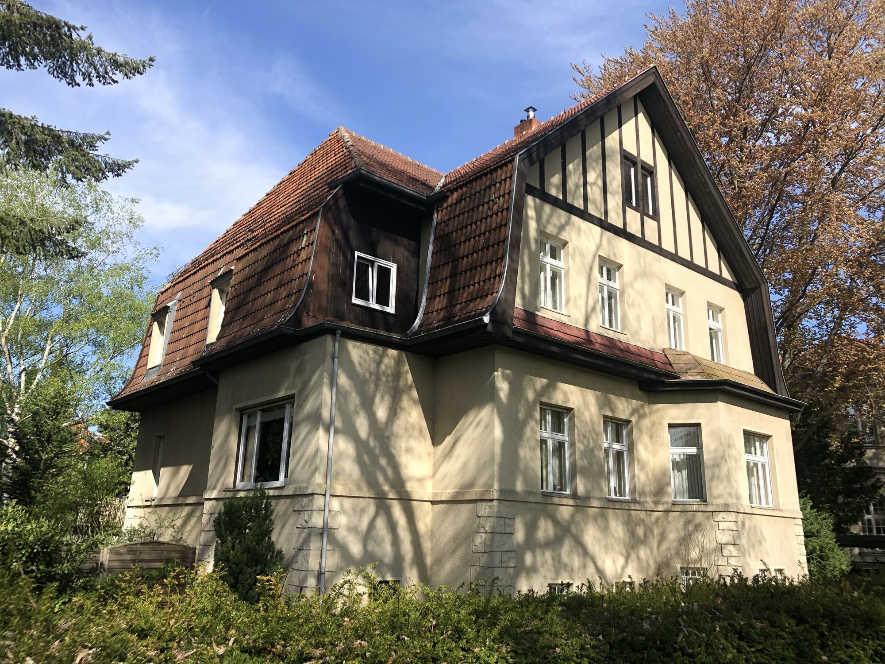

<title>Landhaus Villenkolonie Lichterfelde</title>
<link rel="preconnect" href="https://fonts.googleapis.com">
<link rel="preconnect" href="https://fonts.gstatic.com" crossorigin>
<link rel="stylesheet" href="https://fonts.googleapis.com/css2?family=Newsreader:ital,opsz,wght@0,6..72,300;0,6..72,400;0,6..72,500;1,6..72,300&family=Public+Sans:wght@300;400;500;600&display=swap">

<script>
(function(){
  var m=document.querySelector('meta[name="viewport"]');
  if(!m){ m=document.createElement("meta"); m.name="viewport"; document.head.appendChild(m); }
  m.content="width=device-width, initial-scale=1, viewport-fit=cover";
})();
</script>
<style>
:root{
  --paper:#F4F6F2; --surface:#FFFFFF; --surface-2:#EDF1EC;
  --ink:#1C241E; --ink-2:#4A544B; --muted:#7C867C;
  --line:#DBE2D8; --line-2:#C9D3C7;
  --accent:#3D5F4E; --accent-ink:#2C4639; --accent-soft:#E6EEE8;
  --brick:#9C5237;
  --shadow:0 1px 2px rgba(28,36,30,.05), 0 8px 24px -12px rgba(28,36,30,.18);
  --r:3px;
  --maxw:1180px;
}
@media (prefers-color-scheme: dark){
  :root:not([data-theme="light"]){
    --paper:#141815; --surface:#1B211D; --surface-2:#222924;
    --ink:#E9EEE8; --ink-2:#B4BEB4; --muted:#879187;
    --line:#2B332C; --line-2:#3A443B;
    --accent:#93BBA0; --accent-ink:#B7D3C0; --accent-soft:#222B25;
    --brick:#C8805F;
    --shadow:0 1px 2px rgba(0,0,0,.4), 0 10px 30px -14px rgba(0,0,0,.6);
  }
}
:root[data-theme="dark"]{
  --paper:#141815; --surface:#1B211D; --surface-2:#222924;
  --ink:#E9EEE8; --ink-2:#B4BEB4; --muted:#879187;
  --line:#2B332C; --line-2:#3A443B;
  --accent:#93BBA0; --accent-ink:#B7D3C0; --accent-soft:#222B25;
  --brick:#C8805F;
  --shadow:0 1px 2px rgba(0,0,0,.4), 0 10px 30px -14px rgba(0,0,0,.6);
}

*{box-sizing:border-box}
html{-webkit-text-size-adjust:100%}
body{
  margin:0; background:var(--paper); color:var(--ink);
  font-family:"Public Sans",-apple-system,BlinkMacSystemFont,"Segoe UI",Roboto,sans-serif;
  font-size:16.5px; line-height:1.62; font-weight:400;
  -webkit-font-smoothing:antialiased;
}
img{max-width:100%; height:auto; display:block}
a{color:inherit}

/* ---------- Sprache ---------- */
:root[data-lang="de"] .en{display:none}
:root[data-lang="en"] .de{display:none}

/* ---------- Bausteine ---------- */
.wrap{width:100%; max-width:var(--maxw); margin-inline:auto; padding-inline:clamp(18px,4vw,40px)}
.eyebrow{
  font-size:11.5px; font-weight:600; letter-spacing:.14em; text-transform:uppercase;
  color:var(--accent); margin:0 0 14px;
}
h1,h2,h3{font-family:"Newsreader",Georgia,"Times New Roman",serif; font-weight:400; text-wrap:balance; margin:0}
h1{font-size:clamp(2.4rem,5.4vw,4.1rem); line-height:1.04; letter-spacing:-.018em}
h2{font-size:clamp(1.65rem,3vw,2.35rem); line-height:1.14; letter-spacing:-.012em}
h3{font-size:1.14rem; line-height:1.3; font-weight:500}
p{margin:0 0 1.05em; max-width:66ch; color:var(--ink-2)}
p.lead{font-size:1.14rem; color:var(--ink); max-width:60ch}

/* ---------- Topbar ---------- */
.top{
  position:sticky; top:0; z-index:60;
  background:color-mix(in srgb, var(--paper) 88%, transparent);
  backdrop-filter:saturate(1.4) blur(10px);
  border-bottom:1px solid var(--line);
}
.top-in{display:flex; align-items:center; gap:18px; height:60px}
.mark{font-family:"Newsreader",Georgia,serif; font-size:1.06rem; letter-spacing:.01em; white-space:nowrap}
.mark span{color:var(--muted)}
.top-sp{flex:1}
.langs{display:flex; border:1px solid var(--line-2); border-radius:var(--r); overflow:hidden}
.langs button{
  font:inherit; font-size:11.5px; font-weight:600; letter-spacing:.1em;
  padding:6px 11px; background:transparent; color:var(--muted);
  border:0; cursor:pointer;
}
.langs button[aria-pressed="true"]{background:var(--accent); color:var(--surface)}
:root[data-theme="dark"] .langs button[aria-pressed="true"],
:root:not([data-theme="light"]) .langs button[aria-pressed="true"]{color:#141815}
.btn{
  display:inline-flex; align-items:center; gap:8px;
  font-size:13.5px; font-weight:500; padding:9px 17px;
  background:var(--ink); color:var(--paper);
  border:1px solid var(--ink); border-radius:var(--r); text-decoration:none; cursor:pointer;
  transition:opacity .15s ease;
}
.btn:hover{opacity:.86}
.btn-ghost{background:transparent; color:var(--ink); border-color:var(--line-2)}
:where(a,button):focus-visible{outline:2px solid var(--accent); outline-offset:3px; border-radius:2px}

/* ---------- Hero ---------- */
.hero{padding:clamp(48px,7vw,90px) 0 0}
.hero-grid{display:grid; grid-template-columns:1fr; gap:clamp(26px,4vw,48px)}
@media (min-width:900px){ .hero-grid{grid-template-columns:1.15fr .85fr; align-items:end} }
.hero h1 em{font-style:italic; color:var(--accent)}
.hero-meta{display:flex; flex-wrap:wrap; gap:10px; margin-top:26px}
.chip{
  font-size:12px; font-weight:500; letter-spacing:.02em;
  padding:6px 12px; border:1px solid var(--line-2); border-radius:100px; color:var(--ink-2);
  background:var(--surface);
}
.chip.hi{border-color:var(--accent); color:var(--accent); background:var(--accent-soft)}
.hero-img{margin:clamp(34px,5vw,58px) 0 0; border-radius:var(--r); overflow:hidden; box-shadow:var(--shadow)}
.hero-img img{width:100%; height:auto; aspect-ratio:16/9; object-fit:cover}

/* ---------- Sections ---------- */
section{padding:clamp(52px,7vw,92px) 0}
.rule{border:0; border-top:1px solid var(--line); margin:0}

/* Fakten */
.facts{display:grid; gap:1px; background:var(--line); border:1px solid var(--line); border-radius:var(--r); overflow:hidden}
@media (min-width:620px){ .facts{grid-template-columns:repeat(2,1fr)} }
@media (min-width:900px){ .facts{grid-template-columns:repeat(3,1fr)} }
@media (min-width:1080px){ .facts{grid-template-columns:repeat(5,1fr)} }
.fact{background:var(--surface); padding:20px 22px}
.fact dt{font-size:11.5px; font-weight:600; letter-spacing:.11em; text-transform:uppercase; color:var(--muted); margin-bottom:7px}
.fact dd{margin:0; font-size:1.28rem; font-family:"Newsreader",Georgia,serif; font-variant-numeric:tabular-nums}
.fact dd small{display:block; font-family:"Public Sans",sans-serif; font-size:12.5px; color:var(--muted); margin-top:3px}

/* Zielgruppe */
.who{background:var(--accent-soft); border-top:1px solid var(--line); border-bottom:1px solid var(--line)}
.who-grid{display:grid; gap:clamp(24px,4vw,54px)}
@media (min-width:860px){ .who-grid{grid-template-columns:.9fr 1.1fr} }
.who h2{color:var(--accent-ink)}
.who ul{margin:0; padding:0; list-style:none; display:grid; gap:12px}
.who li{display:flex; gap:12px; align-items:flex-start; color:var(--ink-2); max-width:56ch}
.who li::before{
  content:""; flex:none; width:7px; height:7px; margin-top:.58em;
  background:var(--accent); border-radius:50%;
}
.note{
  margin-top:26px; padding:16px 18px; background:var(--surface);
  border-left:2px solid var(--accent); border-radius:0 var(--r) var(--r) 0;
  font-size:14.5px; color:var(--ink-2);
}
.note p{margin:0; max-width:60ch}

/* Moeblierung */
.furn{display:grid; gap:1px; background:var(--line); border:1px solid var(--line); border-radius:var(--r); overflow:hidden; margin-top:8px}
@media (min-width:700px){ .furn{grid-template-columns:repeat(2,1fr)} }
@media (min-width:1000px){ .furn{grid-template-columns:repeat(3,1fr)} }
.furn section{background:var(--surface); padding:22px 24px; margin:0}
.furn h3{font-family:"Public Sans",sans-serif; font-size:11.5px; font-weight:600; letter-spacing:.11em;
  text-transform:uppercase; color:var(--accent); margin:0 0 12px}
.furn ul{margin:0; padding:0; list-style:none; display:grid; gap:7px}
.furn li{font-size:14.6px; color:var(--ink-2); display:flex; gap:9px; align-items:flex-start}
.furn li::before{content:""; flex:none; width:4px; height:4px; margin-top:.66em; border-radius:50%; background:var(--line-2)}

/* Preis */
.price{margin-top:26px; padding-top:22px; border-top:1px solid var(--line-2)}
.price-n{font-family:"Newsreader",Georgia,serif; font-size:2.5rem; line-height:1; letter-spacing:-.02em; font-variant-numeric:tabular-nums}
.price-n span{font-family:"Public Sans",sans-serif; font-size:.95rem; color:var(--muted); letter-spacing:0; margin-left:6px}
.price-l{margin-top:8px; font-size:13px; color:var(--muted)}

/* Mobile */
@media (max-width:560px){
  .hero-img img{aspect-ratio:4/3}
  .mark span{display:none}
  .top-in{gap:10px}
  .btn{padding:8px 13px; font-size:12.5px}
  body{font-size:16px}
  .grid{grid-template-columns:1fr; gap:10px}
  .tile figcaption{opacity:1}
  .speclist li{grid-template-columns:1fr; gap:2px}
  .speclist span{text-align:left}
}

/* Galerie */
.gal-nav{display:flex; flex-wrap:wrap; gap:8px; margin:0 0 26px}
.gal-nav button{
  font:inherit; font-size:12.5px; font-weight:500; padding:7px 14px; cursor:pointer;
  background:var(--surface); color:var(--ink-2);
  border:1px solid var(--line-2); border-radius:100px;
  transition:all .15s ease;
}
.gal-nav button[aria-pressed="true"]{background:var(--ink); color:var(--paper); border-color:var(--ink)}
.grid{display:grid; gap:12px; grid-template-columns:repeat(auto-fill,minmax(260px,1fr))}
.more{margin-top:20px; display:flex; justify-content:center}
.more button{
  font:inherit; font-size:13.5px; font-weight:500; padding:11px 24px; cursor:pointer;
  background:transparent; color:var(--ink); border:1px solid var(--line-2); border-radius:100px;
}
.more button:hover{border-color:var(--ink)}
.more[hidden]{display:none}
.tile{
  position:relative; margin:0; padding:0; border:0; cursor:zoom-in;
  background:var(--surface-2); border-radius:var(--r); overflow:hidden; line-height:0;
}
.tile img{width:100%; height:auto; aspect-ratio:4/3; object-fit:cover; transition:transform .5s cubic-bezier(.2,.7,.3,1)}
.tile:hover img{transform:scale(1.035)}
.tile figcaption{
  position:absolute; inset:auto 0 0 0; padding:24px 12px 9px;
  font-size:12px; line-height:1.35; color:#fff; text-align:left;
  background:linear-gradient(to top, rgba(12,18,14,.78), transparent);
  opacity:0; transition:opacity .2s ease;
}
.tile:hover figcaption, .tile:focus-visible figcaption{opacity:1}

/* Lightbox */
.lb{
  position:fixed; inset:0; z-index:200; display:none;
  background:rgba(10,14,11,.94); padding:clamp(12px,3vw,44px);
  align-items:center; justify-content:center;
}
.lb[open]{display:flex}
.lb img{max-width:100%; max-height:84vh; object-fit:contain; border-radius:2px}
.lb-cap{position:absolute; left:0; right:0; bottom:18px; text-align:center; color:#D7DED8; font-size:13px}
.lb-x,.lb-prev,.lb-next{
  position:absolute; background:rgba(255,255,255,.1); color:#fff; border:0; cursor:pointer;
  width:46px; height:46px; border-radius:50%; font-size:20px; line-height:1;
}
.lb-x{top:16px; right:16px}
.lb-prev{left:14px; top:50%; transform:translateY(-50%)}
.lb-next{right:14px; top:50%; transform:translateY(-50%)}

/* Zweispalter */
.two{display:grid; gap:clamp(26px,4vw,56px)}
@media (min-width:860px){ .two{grid-template-columns:.8fr 1.2fr} }
.speclist{margin:0; padding:0; list-style:none; display:grid; gap:0}
.speclist li{
  display:grid; grid-template-columns:1fr auto; gap:16px; align-items:baseline;
  padding:11px 0; border-bottom:1px solid var(--line); font-size:14.8px;
}
.speclist li:first-child{border-top:1px solid var(--line)}
.speclist b{font-weight:500; color:var(--ink)}
.speclist span{color:var(--muted); text-align:right; font-variant-numeric:tabular-nums}

/* Kontakt */
.cta{background:var(--ink); color:var(--paper)}
.cta h2{color:var(--paper)}
.cta p{color:color-mix(in srgb, var(--paper) 74%, transparent)}
.cta .btn{background:var(--paper); color:var(--ink); border-color:var(--paper)}
.cta-grid{display:grid; gap:28px}
@media (min-width:820px){ .cta-grid{grid-template-columns:1.1fr .9fr; align-items:center} }

/* Footer */
footer{padding:40px 0 56px; font-size:12.8px; color:var(--muted)}
footer p{color:var(--muted); font-size:12.8px; max-width:78ch}
footer .fgrid{display:grid; gap:22px}
@media (min-width:760px){ footer .fgrid{grid-template-columns:1.4fr 1fr} }

@media (prefers-reduced-motion:reduce){
  *{animation:none !important; transition:none !important}
}
</style>

<header class="top">
  <div class="wrap top-in">
    <div class="mark">Paulinenstraße <span>· Lichterfelde West</span></div>
    <div class="top-sp"></div>
    <div class="langs" role="group" aria-label="Sprache / Language">
      <button type="button" data-lang-btn="de" aria-pressed="true">DE</button>
      <button type="button" data-lang-btn="en" aria-pressed="false">EN</button>
    </div>
    <a class="btn" href="#kontakt"><span class="de">Anfragen</span><span class="en">Enquire</span></a>
  </div>
</header>

<main>
<section class="hero">
  <div class="wrap">
    <div class="hero-grid">
      <div>
        <p class="eyebrow"><span class="de">Möbliert auf Zeit · Villenkolonie Lichterfelde West</span><span class="en">Furnished, fixed term · Lichterfelde West villa colony</span></p>
        <h1>
          <span class="de">Auf Zeit in der <em>Villenkolonie</em>.</span>
          <span class="en">A temporary home in the <em>villa colony</em>.</span>
        </h1>
        <div class="hero-meta">
          <span class="chip hi"><span class="de">Befristet 4 bis 5 Monate</span><span class="en">Fixed term, 4 to 5 months</span></span>
          <span class="chip">143,95 m²</span>
          <span class="chip"><span class="de">4 Zimmer, 3 Betten</span><span class="en">4 rooms, 3 beds</span></span>
          <span class="chip"><span class="de">17,80 m² Terrasse nach Südwesten</span><span class="en">17.80 m² south-west terrace</span></span>
          <span class="chip"><span class="de">Anteil am Garten</span><span class="en">Share of the garden</span></span>
          <span class="chip"><span class="de">Denkmalensemble von 1911</span><span class="en">Listed ensemble, 1911</span></span>
        </div>
      </div>
      <div>
        <p class="lead">
          <span class="de">144 Quadratmeter, vier Zimmer, eine Terrasse von knapp 18 Quadratmetern und ein Stück Garten, vollständig und hochwertig möbliert. Wer für ein paar Monate nach Berlin kommt und mit Familie reist, findet hier etwas, das ein Serviced Apartment nicht bietet: ein Landhaus von 1911 in Berlins ältester Villenkolonie, 2020 vollständig saniert.</span>
          <span class="en">144 square metres, four rooms, a terrace of almost 18 square metres and a piece of garden, fully and finely furnished. If you come to Berlin for a few months and bring your family, this offers what a serviced apartment cannot: a 1911 country house in Berlin's oldest villa colony, fully renovated in 2020.</span>
        </p>
        <div class="price">
          <div class="price-n">3.750 €<span>/ <span class="de">Monat</span><span class="en">month</span></span></div>
          <div class="price-l"><span class="de">all inclusive · Nebenkosten und Möblierung enthalten</span><span class="en">all inclusive · utilities and furnishing included</span></div>
        </div>
      </div>
    </div>
    <figure class="hero-img" style="margin-block-end:0">
      
    </figure>
  </div>
</section>

<section style="padding-top:0">
  <div class="wrap">
    <dl class="facts">
      <div class="fact"><dt><span class="de">Wohnfläche</span><span class="en">Living area</span></dt><dd>143,95 m²<small><span class="de">Wohnräume, ohne Terrasse</span><span class="en">rooms only, terrace extra</span></small></dd></div>
      <div class="fact"><dt><span class="de">Zimmer</span><span class="en">Rooms</span></dt><dd>4<small><span class="de">3 Betten, plus Küche mit Essplatz</span><span class="en">3 beds, plus eat-in kitchen</span></small></dd></div>
      <div class="fact"><dt><span class="de">Badezimmer</span><span class="en">Bathrooms</span></dt><dd>1<small><span class="de">Wanne und Dusche</span><span class="en">bath and shower</span></small></dd></div>
      <div class="fact"><dt><span class="de">Terrasse</span><span class="en">Terrace</span></dt><dd>17,80 m²<small><span class="de">Südwest, plus Garten</span><span class="en">south-west, plus garden</span></small></dd></div>
      <div class="fact"><dt><span class="de">Baujahr</span><span class="en">Built</span></dt><dd>1911<small><span class="de">saniert 2020/21</span><span class="en">renovated 2020/21</span></small></dd></div>
    </dl>
  </div>
</section>

<section class="who" id="fuer-wen">
  <div class="wrap who-grid">
    <div>
      <p class="eyebrow"><span class="de">Für wen diese Wohnung gedacht ist</span><span class="en">Who this apartment is for</span></p>
      <h2><span class="de">Ein ganzes Haus statt eines Hotelzimmers</span><span class="en">A whole home instead of a hotel room</span></h2>
    </div>
    <div>
      <p>
        <span class="de">Wir vermieten diese Wohnung ausschließlich befristet, für vier bis fünf Monate. Sie passt zu Menschen, die für einen bestimmten Anlass und für eine absehbare Zeit nach Berlin kommen und danach an ihren Lebensmittelpunkt zurückkehren.</span>
        <span class="en">We let this apartment on a fixed term only, for four to five months. It suits people who come to Berlin for a specific reason and a foreseeable period, and who return to their home base afterwards.</span>
      </p>
      <ul>
        <li><span class="de">Entsandte Fach- und Führungskräfte, die mit Familie für ein Projekt nach Berlin kommen</span><span class="en">Assignees and executives relocating to Berlin with their family for a project</span></li>
        <li><span class="de">Projekt- und Montageeinsätze mit benannter Laufzeit</span><span class="en">Project and site assignments with a defined duration</span></li>
        <li><span class="de">Gastprofessuren und Fellows mit befristeter Einladung an FU, Charité oder ein Institut</span><span class="en">Guest professors and fellows invited for a fixed term by FU, Charité or an institute</span></li>
        <li><span class="de">Familien aus der Umgebung, die während einer Sanierung oder bis zum Einzug in ihr neues Zuhause eine Bleibe brauchen</span><span class="en">Local families needing a home during a renovation or until their new house is ready</span></li>
      </ul>
</div>
</section>

<section id="galerie">
  <div class="wrap">
    <p class="eyebrow"><span class="de">Rundgang</span><span class="en">Walkthrough</span></p>
    <h2 style="margin-bottom:22px"><span class="de">Die Räume</span><span class="en">The rooms</span></h2>
    <div class="gal-nav" role="group" aria-label="Filter">
      <button type="button" data-f="all" aria-pressed="true"><span class="de">Alle</span><span class="en">All</span></button>
      <button type="button" data-f="living" aria-pressed="false"><span class="de">Wohnen</span><span class="en">Living</span></button>
      <button type="button" data-f="kitchen" aria-pressed="false"><span class="de">Küche</span><span class="en">Kitchen</span></button>
      <button type="button" data-f="bath" aria-pressed="false"><span class="de">Bad</span><span class="en">Bathroom</span></button>
      <button type="button" data-f="bed" aria-pressed="false"><span class="de">Schlafen</span><span class="en">Bedrooms</span></button>
      <button type="button" data-f="outside" aria-pressed="false"><span class="de">Haus und Garten</span><span class="en">House and garden</span></button>
    </div>
    <div class="grid" id="grid"></div>
    <div class="more" id="more"><button type="button"></button></div>
  </div>
</section>

<hr class="rule">

<section id="ausstattung">
  <div class="wrap two">
    <div>
      <p class="eyebrow"><span class="de">Ausstattung</span><span class="en">Specification</span></p>
      <h2><span class="de">Was 2020 und 2021 neu gemacht wurde</span><span class="en">What was rebuilt in 2020 and 2021</span></h2>
      <p style="margin-top:18px">
        <span class="de">Die Wohnung wurde vollständig entkernt und neu ausgebaut. Heizung, Sanitär, Elektrik, Böden und die Fenster zur Straßenseite sind neu, letztere in denkmalgerechter Ausführung als Doppelkastenfenster.</span>
        <span class="en">The apartment was stripped back and rebuilt. Heating, plumbing, electrics, floors and the street-facing windows are new, the windows as heritage-compliant box windows.</span>
      </p>
      <p>
        <span class="de">Die Wohnung ist vollständig und hochwertig möbliert, nichts davon ist Zwischenlösung: Boxspringbetten, massive Holztische, Polstermöbel, dazu Küchengeräte von Siemens mit Kaffeevollautomat und Dampfgarer, eine Waschmaschine von Miele und ein Trockner von Siemens. Sie ziehen mit dem Koffer ein.</span>
        <span class="en">The apartment is furnished completely and to a high standard, none of it makeshift: boxspring beds, solid wood tables, upholstered furniture, Siemens kitchen appliances including a coffee machine and steam oven, a Miele washing machine and a Siemens dryer. You move in with a suitcase.</span>
      </p>
    </div>
    <div>
      <ul class="speclist">
        <li><b><span class="de">Böden</span><span class="en">Floors</span></b><span><span class="de">Fischgrätparkett, Landhausdielen</span><span class="en">Herringbone and plank parquet</span></span></li>
        <li><b><span class="de">Küche</span><span class="en">Kitchen</span></b><span><span class="de">Einbauküche Schüller, Granitarbeitsplatte</span><span class="en">Schüller fitted kitchen, granite worktop</span></span></li>
        <li><b><span class="de">Küchengeräte</span><span class="en">Appliances</span></b><span><span class="de">Siemens, inkl. Kaffeevollautomat und Dampfgarer</span><span class="en">Siemens, incl. coffee machine and steam oven</span></span></li>
        <li><b><span class="de">Bad</span><span class="en">Bathroom</span></b><span><span class="de">Wanne, Dusche, Doppelwaschtisch</span><span class="en">Bath, shower, double vanity</span></span></li>
        <li><b><span class="de">Waschen</span><span class="en">Laundry</span></b><span><span class="de">Waschmaschine von Miele, Trockner von Siemens</span><span class="en">Miele washing machine, Siemens dryer</span></span></li>
        <li><b><span class="de">Heizung</span><span class="en">Heating</span></b><span><span class="de">Gasbrennwerttherme, 2020</span><span class="en">Gas condensing boiler, 2020</span></span></li>
        <li><b><span class="de">Fenster</span><span class="en">Windows</span></b><span><span class="de">Doppelkastenfenster mit Isolierglas</span><span class="en">Box windows, insulated glazing</span></span></li>
        <li><b><span class="de">Elektrik</span><span class="en">Electrics</span></b><span><span class="de">Neuinstallation mit FI</span><span class="en">Rewired, RCD protected</span></span></li>
        <li><b><span class="de">Terrasse</span><span class="en">Terrace</span></b><span><span class="de">17,80 m², Südwest, direkt von der Küche</span><span class="en">17.80 m², south-west, off the kitchen</span></span></li>
        <li><b><span class="de">Garten</span><span class="en">Garden</span></b><span><span class="de">Anteil am Grundstück zur Mitnutzung</span><span class="en">Share of the grounds</span></span></li>
        <li><b><span class="de">Möblierung</span><span class="en">Furnishing</span></b><span><span class="de">Vollständig und hochwertig, Zuschlag separat</span><span class="en">Complete, high quality, surcharge separate</span></span></li>
        <li><b><span class="de">Lage im Haus</span><span class="en">Position</span></b><span><span class="de">1. Obergeschoss, kein Aufzug</span><span class="en">First floor, no lift</span></span></li>
      </ul>
    </div>
  </div>
</section>

<hr class="rule">

<section id="moeblierung">
  <div class="wrap">
    <p class="eyebrow"><span class="de">Möblierung</span><span class="en">Furnishing</span></p>
    <h2 style="margin-bottom:10px"><span class="de">Was genau drin ist</span><span class="en">What is actually in it</span></h2>
    <p style="margin-bottom:26px">
      <span class="de">Alles ist vorhanden, nichts ist Zwischenlösung. Sie brauchen für den Aufenthalt nichts anzuschaffen.</span>
      <span class="en">Everything is there and nothing is makeshift. You will not need to buy a thing for your stay.</span>
    </p>
    <div class="furn">
      <section>
        <h3><span class="de">Wohnen und Essen</span><span class="en">Living and dining</span></h3>
        <ul>
          <li><span class="de">Zwei Sofas</span><span class="en">Two sofas</span></li>
          <li><span class="de">Esstisch mit sechs Stühlen</span><span class="en">Dining table with six chairs</span></li>
          <li><span class="de">Sideboard und Kommode</span><span class="en">Sideboard and chest of drawers</span></li>
          <li><span class="de">Bogenleuchte und Deckenleuchten</span><span class="en">Arc lamp and ceiling lights</span></li>
        </ul>
      </section>
      <section>
        <h3><span class="de">Küche</span><span class="en">Kitchen</span></h3>
        <ul>
          <li><span class="de">Eigener Esstisch mit Stühlen</span><span class="en">Separate dining table with chairs</span></li>
          <li><span class="de">Einbauküche Schüller mit Granitarbeitsplatte</span><span class="en">Schüller fitted kitchen, granite worktop</span></li>
          <li><span class="de">Siemens: Backofen, Dampfgarer, Kaffeevollautomat, Induktionskochfeld</span><span class="en">Siemens: oven, steam oven, coffee machine, induction hob</span></li>
          <li><span class="de">Großer Kühl- und Gefrierschrank, Spülmaschine</span><span class="en">Large fridge freezer, dishwasher</span></li>
          <li><span class="de">Geschirr, Gläser, Töpfe und Besteck</span><span class="en">Crockery, glassware, pots and cutlery</span></li>
        </ul>
      </section>
      <section>
        <h3><span class="de">Schlafen</span><span class="en">Sleeping</span></h3>
        <ul>
          <li><span class="de">Drei Betten, davon zwei Boxspringbetten</span><span class="en">Three beds, two of them boxspring</span></li>
          <li><span class="de">Große Kleiderschränke in jedem Schlafzimmer</span><span class="en">Large wardrobes in every bedroom</span></li>
          <li><span class="de">Nachttische und Leuchten</span><span class="en">Bedside tables and lamps</span></li>
          <li><span class="de">Bettwäsche und Handtücher</span><span class="en">Bed linen and towels</span></li>
        </ul>
      </section>
      <section>
        <h3><span class="de">Arbeiten</span><span class="en">Working</span></h3>
        <ul>
          <li><span class="de">Zwei Schreibtische mit Stühlen</span><span class="en">Two desks with chairs</span></li>
          <li><span class="de">Sessel und Leseleuchten</span><span class="en">Armchairs and reading lamps</span></li>
          <li><span class="de">Internetanschluss</span><span class="en">Internet connection</span></li>
        </ul>
      </section>
      <section>
        <h3><span class="de">Bad und Hauswirtschaft</span><span class="en">Bathroom and utility</span></h3>
        <ul>
          <li><span class="de">Waschmaschine von Miele</span><span class="en">Miele washing machine</span></li>
          <li><span class="de">Trockner von Siemens</span><span class="en">Siemens dryer</span></li>
          <li><span class="de">Spiegelschrank, Wanne und Dusche</span><span class="en">Mirror cabinet, bath and shower</span></li>
        </ul>
      </section>
      <section>
        <h3><span class="de">Draußen</span><span class="en">Outside</span></h3>
        <ul>
          <li><span class="de">Loungemöbel auf der Terrasse</span><span class="en">Lounge furniture on the terrace</span></li>
          <li><span class="de">Sonnenschirm</span><span class="en">Parasol</span></li>
          <li><span class="de">Gartenmöbel mit Esstisch und Liege</span><span class="en">Garden furniture with dining table and lounger</span></li>
        </ul>
      </section>
    </div>
  </div>
</section>

<hr class="rule">

<section id="lage">
  <div class="wrap two">
    <div>
      <p class="eyebrow"><span class="de">Lage</span><span class="en">Location</span></p>
      <h2><span class="de">Lichterfelde West</span><span class="en">Lichterfelde West</span></h2>
    </div>
    <div>
      <p>
     <p>
        <span class="de">Die Villenkolonie Lichterfelde West wurde ab 1865 von Johann Anton Wilhelm von Carstenn angelegt und ist damit die älteste Berlins. Breite Straßen, große Grundstücke, Landhäuser statt Mietshäuser. Das Haus gehört als Ensembleteil zur Berliner Denkmalliste.</span>
        <span class="en">The Lichterfelde West villa colony was laid out from 1865 by Johann Anton Wilhelm von Carstenn, making it Berlin's oldest. Wide streets, generous plots, country houses rather than tenement blocks. The house is part of a listed ensemble on the Berlin heritage register.</span>
      </p>
      <p>
        <span class="de">Was das im Alltag bedeutet: es ist still, es ist grün, und Schulen, Kitas und Einkauf sind fußläufig. Die S-Bahn bringt Sie in gut einer halben Stunde nach Mitte, der Süden Berlins mit Dahlem, Adlershof und dem Südwesten der Stadt liegt vor der Tür.</span>
        <span class="en">What that means day to day: it is quiet, it is green, and schools, nurseries and shops are within walking distance. The S-Bahn reaches Mitte in about half an hour, while Dahlem, Adlershof and the south-west of the city are on the doorstep.</span>
      </p>
      <ul class="speclist" style="margin-top:22px">
        <li><b><span class="de">Freie Universität, Campus Dahlem</span><span class="en">Freie Universität, Dahlem campus</span></b><span>~4 km</span></li>
        <li><b><span class="de">S-Bahnhof Lichterfelde West</span><span class="en">Lichterfelde West S-Bahn</span></b><span><span class="de">wenige Minuten zu Fuß</span><span class="en">a few minutes on foot</span></span></li>
        <li><b><span class="de">Botanischer Garten</span><span class="en">Botanical Garden</span></b><span>~3 km</span></li>
        <li><b><span class="de">Berlin Mitte</span><span class="en">Berlin Mitte</span></b><span><span class="de">ca. 30 Minuten mit der S-Bahn</span><span class="en">approx. 30 minutes by S-Bahn</span></span></li>
      </ul>
    </div>
  </div>
</section>

<section class="cta" id="kontakt">
  <div class="wrap cta-grid">
    <div>
      <p class="eyebrow" style="color:var(--paper); opacity:.6"><span class="de">Anfrage</span><span class="en">Enquiry</span></p>
      <h2><span class="de">Schreiben Sie uns, worum es geht.</span><span class="en">Tell us what brings you here.</span></h2>
      <p style="margin-top:14px">
        <span class="de">Am schnellsten geht es, wenn Ihre Nachricht gleich den Anlass Ihres Aufenthalts, den gewünschten Zeitraum und die Zahl der einziehenden Personen enthält.</span>
        <span class="en">The quickest route is a message that already states the reason for your stay, the period you need and how many people will move in.</span>
      </p>
    </div>
    <div>
      <a class="btn" href="mailto:m.petersdorff@gmail.com?subject=Paulinenstra%C3%9Fe%20Lichterfelde%20West">
        <span class="de">Anfrage per E-Mail</span><span class="en">Enquire by email</span>
      </a>
      <p style="margin-top:16px; font-size:13.5px">
        <span class="de">Besichtigung nach Absprache, auch per Video.</span>
        <span class="en">Viewings by arrangement, video viewings possible.</span>
      </p>
    </div>
  </div>
</section>

<footer>
  <div class="wrap fgrid">
    <div>
      <p>
        <span class="de"><b>Energieausweis.</b> Für dieses Gebäude besteht keine Pflicht zur Ausstellung eines Energieausweises. Es ist als Ensembleteil nach § 3 Abs. 1 Nr. 3 GEG ein Baudenkmal, auf das § 80 Abs. 3 bis 7 GEG nach § 79 Abs. 4 Satz 2 GEG nicht anzuwenden ist. Ein Energieausweis liegt nicht vor, Pflichtangaben nach § 87 GEG entfallen deshalb.</span>
        <span class="en"><b>Energy certificate.</b> This building is not required to hold an energy performance certificate. As part of a listed ensemble it is a protected building under § 3 (1) no. 3 GEG, to which § 80 (3) to (7) GEG does not apply by virtue of § 79 (4) sentence 2 GEG. No certificate exists, so the mandatory advertisement details under § 87 GEG do not apply.</span>
      </p>
      <p>
        <span class="de"><b>Möblierungszuschlag.</b> Die Miete wird in Nettokaltmiete und Möblierungszuschlag getrennt ausgewiesen. Der Zuschlag wird aus dem Zeitwert der Einrichtung hergeleitet.</span>
        <span class="en"><b>Furniture surcharge.</b> Rent is shown separately as net cold rent and furniture surcharge. The surcharge is derived from the current value of the furnishings.</span>
      </p>
    </div>
    <div>
      <p><b><span class="de">Angaben</span><span class="en">Details</span></b><br>
      <span class="de">Vermietung durch den Eigentümer, provisionsfrei. Angaben nach bestem Wissen, ohne Gewähr. Die genaue Anschrift nennen wir bei Kontaktaufnahme.</span>
      <span class="en">Let directly by the owner, no agency fee. Information given in good faith, without warranty. The exact address is shared on contact.</span></p>
      <p style="margin-top:14px"><b>Impressum</b><br>
      Moritz von Petersdorff-Campen<br>
      <a href="mailto:m.petersdorff@gmail.com">m.petersdorff@gmail.com</a><br>
      <span class="de">Privates Vermietungsangebot, kein gewerblicher Anbieter.</span><span class="en">Private letting, not a commercial provider.</span></p>
    </div>
  </div>
</footer>
</main>

<div class="lb" id="lb" role="dialog" aria-modal="true" aria-label="Bild">
  <button class="lb-x" type="button" aria-label="Schließen">&times;</button>
  <button class="lb-prev" type="button" aria-label="Zurück">&#8249;</button>
  
  <button class="lb-next" type="button" aria-label="Weiter">&#8250;</button>
  <div class="lb-cap" id="lbcap"></div>
</div>

<script>
const PHOTOS = [
 {f:"img/13_bed.jpg",t:"img/t13_bed.jpg",c:"Hauptschlafzimmer mit Boxspringbett",ce:"Main bedroom with boxspring bed",k:"bed"},
 {f:"img/31_living.jpg",t:"img/t31_living.jpg",c:"Entree mit Fischgrätparkett",ce:"Entrance hall with herringbone parquet",k:"living"},
 {f:"img/01_living.jpg",t:"img/t01_living.jpg",c:"Wohn- und Essbereich",ce:"Living and dining",k:"living"},
 {f:"img/02_living.jpg",t:"img/t02_living.jpg",c:"Wohnbereich",ce:"Living area",k:"living"},
 {f:"img/03_living.jpg",t:"img/t03_living.jpg",c:"Essbereich",ce:"Dining area",k:"living"},
 {f:"img/25_living.jpg",t:"img/t25_living.jpg",c:"Essbereich mit Blick in den Flur",ce:"Dining area, view to the hallway",k:"living"},
 {f:"img/04_living.jpg",t:"img/t04_living.jpg",c:"Blick zum Essplatz",ce:"Towards the table",k:"living"},
 {f:"img/05_kitchen.jpg",t:"img/t05_kitchen.jpg",c:"Küche mit Granitarbeitsplatte",ce:"Kitchen with granite worktop",k:"kitchen"},
 {f:"img/06_kitchen.jpg",t:"img/t06_kitchen.jpg",c:"Essplatz am Fenster",ce:"Breakfast table by the window",k:"kitchen"},
 {f:"img/07_kitchen.jpg",t:"img/t07_kitchen.jpg",c:"Backofen, Dampfgarer, Kaffeevollautomat",ce:"Oven, steamer, coffee machine",k:"kitchen"},
 {f:"img/08_kitchen.jpg",t:"img/t08_kitchen.jpg",c:"Durchgang zum Flur",ce:"Through to the hallway",k:"kitchen"},
 {f:"img/09_kitchen.jpg",t:"img/t09_kitchen.jpg",c:"Zugang zur Terrasse",ce:"Access to the terrace",k:"kitchen"},
 {f:"img/10_bath.jpg",t:"img/t10_bath.jpg",c:"Bad mit Wanne und Dusche",ce:"Bathroom with bath and shower",k:"bath"},
 {f:"img/11_bath.jpg",t:"img/t11_bath.jpg",c:"Doppelwaschtisch, Waschmaschine und Trockner",ce:"Double vanity, washer and dryer",k:"bath"},
 {f:"img/12_bath.jpg",t:"img/t12_bath.jpg",c:"Bad",ce:"Bathroom",k:"bath"},
 {f:"img/14_bed.jpg",t:"img/t14_bed.jpg",c:"Hauptschlafzimmer",ce:"Main bedroom",k:"bed"},
 {f:"img/15_bed.jpg",t:"img/t15_bed.jpg",c:"Hauptschlafzimmer",ce:"Main bedroom",k:"bed"},
 {f:"img/26_bed.jpg",t:"img/t26_bed.jpg",c:"Hauptschlafzimmer, Durchgang",ce:"Main bedroom, through view",k:"bed"},
 {f:"img/16_bed.jpg",t:"img/t16_bed.jpg",c:"Zweites Schlafzimmer",ce:"Second bedroom",k:"bed"},
 {f:"img/17_bed.jpg",t:"img/t17_bed.jpg",c:"Drittes Zimmer mit Arbeitsplatz",ce:"Third room with desk",k:"bed"},
 {f:"img/18_bed.jpg",t:"img/t18_bed.jpg",c:"Drittes Zimmer, Einbauschrank",ce:"Third room, fitted wardrobe",k:"bed"},
 {f:"img/28_bed.jpg",t:"img/t28_bed.jpg",c:"Zimmer mit Durchgang",ce:"Room with connecting door",k:"bed"},
 {f:"img/29_bed.jpg",t:"img/t29_bed.jpg",c:"Zimmer mit Einbauschrank",ce:"Room with fitted wardrobe",k:"bed"},
 {f:"img/32_bed.jpg",t:"img/t32_bed.jpg",c:"Kleineres Zimmer mit Arbeitsplatz",ce:"Smaller room with a desk",k:"bed"},
 {f:"img/33_bed.jpg",t:"img/t33_bed.jpg",c:"Kleineres Zimmer, Einbauschrank",ce:"Smaller room, fitted wardrobe",k:"bed"},
 {f:"img/19_bed.jpg",t:"img/t19_bed.jpg",c:"Viertes Zimmer",ce:"Fourth room",k:"bed"},
 {f:"img/30_bed.jpg",t:"img/t30_bed.jpg",c:"Viertes Zimmer",ce:"Fourth room",k:"bed"},
 {f:"img/20_outside.jpg",t:"img/t20_outside.jpg",c:"Terrasse, 17,80 m² nach Südwesten",ce:"Terrace, 17.80 m² facing south-west",k:"outside"},
 {f:"img/21_outside.jpg",t:"img/t21_outside.jpg",c:"Terrasse",ce:"Terrace",k:"outside"},
 {f:"img/22_outside.jpg",t:"img/t22_outside.jpg",c:"Terrasse",ce:"Terrace",k:"outside"},
 {f:"img/00_house.jpg",t:"img/t00_house.jpg",c:"Das Landhaus von der Straßenseite",ce:"The house from the street",k:"outside"},
 {f:"img/23_outside.jpg",t:"img/t23_outside.jpg",c:"Der Garten hinter dem Haus",ce:"The garden behind the house",k:"outside"},
 {f:"img/27_common.jpg",t:"img/t27_common.jpg",c:"Treppenhaus",ce:"Stairwell",k:"outside"},
 {f:"img/24_outside.jpg",t:"img/t24_outside.jpg",c:"Landhaus von 1911/12",ce:"Country house, 1911/12",k:"outside"}
];

const root = document.documentElement;
const grid = document.getElementById("grid");
let filter = "all";

function lang(){ return root.getAttribute("data-lang") || "de"; }

function setLang(l){
  root.setAttribute("data-lang", l);
  document.querySelectorAll("[data-lang-btn]").forEach(b=>{
    b.setAttribute("aria-pressed", String(b.dataset.langBtn === l));
  });
  render();
}
document.querySelectorAll("[data-lang-btn]").forEach(b=>{
  b.addEventListener("click", ()=> setLang(b.dataset.langBtn));
});

const STEP = 12;
let shown = STEP;
const moreBox = document.getElementById("more");
const moreBtn = moreBox.querySelector("button");

function render(){
  const l = lang();
  const list = PHOTOS.filter(p => filter === "all" || p.k === filter);
  const visible = list.slice(0, shown);
  grid.innerHTML = "";
  visible.forEach(p=>{
    const i = PHOTOS.indexOf(p);
    const fig = document.createElement("figure");
    fig.className = "tile";
    fig.tabIndex = 0;
    fig.setAttribute("role","button");
    const cap = l === "en" ? p.ce : p.c;
    fig.innerHTML = ''
                  + '<figcaption>'+cap+'</figcaption>';
    fig.addEventListener("click", ()=> open(i));
    fig.addEventListener("keydown", e=>{ if(e.key==="Enter"||e.key===" "){ e.preventDefault(); open(i);} });
    grid.appendChild(fig);
  });
  const rest = list.length - visible.length;
  if(rest > 0){
    moreBox.hidden = false;
    moreBtn.textContent = (l === "en" ? "Show " + rest + " more photos" : "Weitere " + rest + " Bilder zeigen");
  } else {
    moreBox.hidden = true;
  }
}

moreBtn.addEventListener("click", ()=>{ shown += STEP * 2; render(); });

document.querySelectorAll(".gal-nav button").forEach(b=>{
  b.addEventListener("click", ()=>{
    filter = b.dataset.f;
    shown = STEP;
    document.querySelectorAll(".gal-nav button").forEach(x=> x.setAttribute("aria-pressed", String(x===b)));
    render();
  });
});

const lb = document.getElementById("lb");
const lbimg = document.getElementById("lbimg");
const lbcap = document.getElementById("lbcap");
let cur = 0;

function open(i){
  cur = i;
  const p = PHOTOS[i];
  lbimg.src = p.f;
  const c = lang() === "en" ? p.ce : p.c;
  lbimg.alt = c; lbcap.textContent = c;
  lb.setAttribute("open","");
  document.body.style.overflow = "hidden";
}
function close(){ lb.removeAttribute("open"); document.body.style.overflow = ""; }
function step(d){ open((cur + d + PHOTOS.length) % PHOTOS.length); }

lb.querySelector(".lb-x").addEventListener("click", close);
lb.querySelector(".lb-prev").addEventListener("click", e=>{ e.stopPropagation(); step(-1); });
lb.querySelector(".lb-next").addEventListener("click", e=>{ e.stopPropagation(); step(1); });
lb.addEventListener("click", e=>{ if(e.target === lb) close(); });
document.addEventListener("keydown", e=>{
  if(!lb.hasAttribute("open")) return;
  if(e.key === "Escape") close();
  if(e.key === "ArrowLeft") step(-1);
  if(e.key === "ArrowRight") step(1);
});

setLang((navigator.language || "de").toLowerCase().startsWith("de") ? "de" : "en");
</script>
